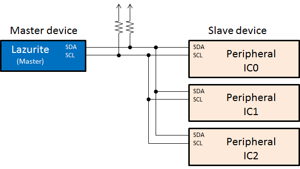

I2Cは、SPI同様にマイコンと周辺機器の通信で使用される一般的なインタフェースで、SDAとSCLの2線でデータの送受信を行います。また、I2Cは通信速度が仕様化されています。本Lazuriteでは400kbpsのファーストモードでやり取りをするように設計されています。
I2Cは、通常マイコンがI2CのMasterデバイス、周辺機器がSlaveデバイスとなり信号のやり取りが行われます。ArduinoはI2CのMaster／Slaveの両方に対応していますが、LazuriteはI2Cのマスター機能しか搭載しておりません。
本関数を使用するためには、"プロジェクトメニュー"の"ライブラリを使用する"から、Wireのライブラリを選択して有効にしてください。
Lazurite Sub-GHzで使用しているマイコン ML620Q504は2系統のI2Cインタフェースを搭載しています。I2Cはピン番号の18ピンまたはA4端子がSDA、19ピンまたたA5端子がSCLとなります。
もう一系統は、Wire0というライブラリ群で、無線モジュールBP3596を制御するために使用しています。
◆I2Cの接続方法
I2Cは、信号線を回路上でプルアップして複数のSlaveデバイスを接続します。

|
* |
Wire.begin() |
I2Cの初期化を行います。 |
|
Wire.beginTransmission(address) |
データの送受信を行うスレーブアドレスを指定します。 |
|
|
+ |
size_t Wire.write_byte(data) |
1バイトのデータを送信用バッファに格納します。 |
|
* |
size_t Wire.write(data,quantity) |
dataで指定したデータポインタを先頭に、quantityで指定したバイト数を送信用バッファに格納します。 |
|
int Wire.available() |
送信バッファの残り容量を返します。 |
|
|
* |
Wire.endTransmission(sendStop) |
trueを指定したらSTOPビットを発行します。 |
|
* |
Wire.requestFrom(address, quantity,sendStop) |
データの読み出しを行い、受信用バッファにデータを格納します。 |
|
int Wire.read(void) |
送信バッファに格納されたデータを読み出します。 |
* Arduinoと差異がある関数です。
+ Arduinoになく、Lazuriteにある関数です。
(注意) Arduinoとは異なり、引数の省略を行うことができません。
サンプル
Laurite Sub-GHzでは、BP3596モジュールに搭載されているEEPROMからデータを読み出すプログラムで使用しています。
下記は、LazuriteIDE\hardware\lazurite_subghz\sub_ghz\CTI\hwif\hal_lazurite.cのプログラムです。
devAddrは、EEPROMのスレーブアドレスを指定します。
addrは、データを読み出すEEPROMメモリの番地を指定します。
*dataは読み出したデータを格納する先頭ポインタで、sizeは読み出すバイト数になっています。
Wire0.endTransmission(false)は、STOPビットを発行せずに続けてデータを読み出すために使用しています。
Wire0.endTransmission(true)にしたら、I2Cブロックはストップビットを発行してdevAddrとのデータのやり取りを終了するため、正常な値を読み出すことができなくなります。